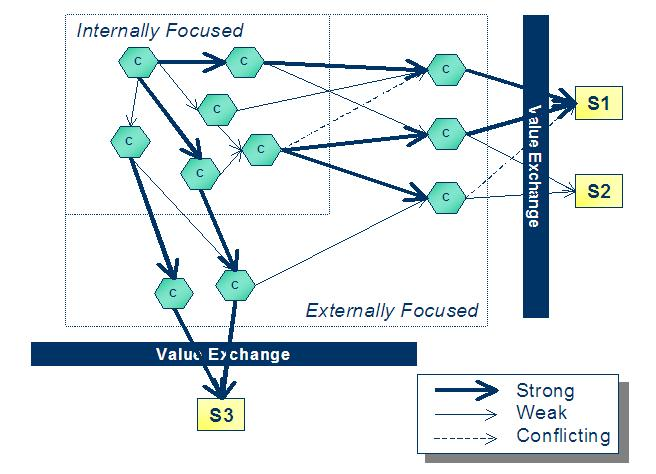

The primary steps in performing a Capability Model Assessment are:
-
Identify linkages between internal and external capabilities and between external capabilities and value net player
segments
-
Assess capabilities by customer segment
Step 1: Refine and clarify the Focus Definition (scope of activities that will be assessed)
Prior to performing the Capability Model Assessment, the scope of the engagement should be defined and used as input to
the assessment. The Focus Definition should then be refined and clarified in order ensure that a “manageable” area has
been established to meet the needs of the assessment in the agreed to scope of the engagement. The following areas
should be reviewed, refined and clarified as needed:
-
Breadth of coverage: Number of business units, geographic boundaries, Value Net Player, customer segments, other
segments, major processes (CRM, SCM, etc.), business functions, products and services, etc.
-
Depth of coverage: High-level capability analysis versus detailed capability analysis, Capabilities only versus
capabilities plus capability enabler identification and analysis (normally not done at this level), degree of
analysis of areas such as capability relationships (linkages) etc.
-
Accessibility of information: Existing analysis, access to client SMEs, etc.
-
Other “scope” related information that will help the team focus on the assessment of relevant capabilities needed
for the engagement
In addition to refining and clarifying the scope, it is beneficial to review (if done previously) or document the
current business context in which these capabilities are operating. The assessment of the capabilities is based in
large part on the internal and external business context. For example, new environmental regulations on electric
utilities may cause the capability, “Ability to produce low cost energy,” to perform poorly. In another example, the
internal culture of a large Fortune 500 firm may severely impact the capability, “Ability to quickly design and build
new products.”
The execution of Step 1 will directly impact the amount and quality of the work performed in the following steps.
Step 2: Identify the capabilities within the Focus Definition
This step is highly iterative. The Value Net Players and their subsequent segments are the starting points for the
identification of capabilities. The step starts from the outside of the value net with the value exchanges between the
firm and segment and moves inward until finally concluding with the identification of non-player specific capabilities,
e.g., capabilities that support more than one value net player. The step can be broken down as follows:
-
Confirm Value Net Players and their subsequent segments (from Step 1)
-
Repeat the following steps for each segment in each Value Net Player category (Customer,
Complementor, Supplier and Competitor) to identify the Externally Focused Capabilities:
-
Identify the Value Exchanges – for the purpose of this analysis the focus is on the touch points (Moments
of Truth, interactions, etc.), not the exact type and detail associated with the value exchange elements,
value proposition and value capture.
-
Identify the Externally Focused Capabilities – Each value exchange needs one or more capabilities to
deliver and capture value. Identify the capabilities that directly support the Value Exchange. The
rules described in Section 6, Validation and Verification, can help to identify and properly describe the
capabilities.
-
Identify the Internally Focused Capabilities:
-
Identify the Internally Focused Capabilities – Identify all of the capabilities that are needed to
deliver the Externally Focused Capabilities. As stated above, use the rules from Section 6 to help.
-
Evaluate previously defined capabilities to see if they support more than one Value Net Player category.
-
Identify capabilities that “fill in the gaps.” Since, by definition, capabilities are all linked together
in a network of supporting relationships, some gaps may exist at this point in the analysis. For example, a
capability to source product would probably not be linked directly to a marketing capability. It would
require some manufacturing capabilities in-between.
-
Use the rules in Section 6 to assist in identifying these capabilities.
The capability model illustration (Figure 3) can help to capture and focus step 2.
Step 3: Identify linkages between internal and external capabilities and between external capabilities and value
net player segments
The linkages in the capability Model represent the relationships between a capability and segment (through a value
proposition), Externally Focused Capabilities, and between a capability and another capability, Internally
Focused Capabilities. This relationship can be categorized as strong, weak or even conflicting. The step can be
broken down as follows:
-
Identify linkages
-
Between Externally Focused Capabilities and Segments (via Value Exchange).
-
Between Capabilities.
-
Categorize linkages
-
Strong - A strong supporting relationship is one that is essential to the
output of the supported Capability or Value Proposition.
-
Weak - A weak supporting relationship is seen as having a positive impact on the supported
Capability or Value Proposition, but not essential.
-
Conflicting - A conflicting relationship is one that actually degrades the
performance of the supported capability or value proposition. For example, the capability, “Ability
to find low prices by switching suppliers,” will diminish the capability, “Ability to build close
relationships with suppliers.”
-
Review and repeat as necessary
-
Create “As-is” Capability Model from previously documented linkages
Tabular – Create a table that identifies all of the linkages and their categorizations as shown in Figure 5
Figure 5: Tabular “As-is” Capability Model
Graphical (Optional) – A graphical model can be created in situations where the Focus Definition is limited, the team
prefers a graphical “view” of the model or if certain portions of the overall model need to be displayed graphically
for emphasis (Figure 6).

Figure 6: Graphical “As-is” Capability Model
It is usually helpful to focus on the strong and conflicting linkages during the assessment, especially if time is
limited. In addition, the degree of linkage identification and categorization should be considered in Step 1 when
refining and clarifying the Focus Definition for the assessment.
Step 4: Assess capabilities by customer segment
The assessment consists of three criteria – capability gaps, capability performance and capability importance. The gaps
represent capabilities that the firm does not possess internally or externally through partnerships or alliances, but
are needed to deliver and capture sustainable value. Performance is how well the capability is doing in relation to the
supported capabilities or value propositions. Importance is how vital are the relationships (linkages) between the
capability (or missing capability in the case of a capability gap) and the supported capabilities or value
propositions.
Note, however, that these assessments are based upon the current environmental, industry and firm contexts. A change in
the external or internal context may change the performance, importance or need for a currently non-existent capability
(gap).
This analysis is performed by segment since a capability may have drastically different ratings across supported
segments.
The step can be broken down as follows:
-
Identify likely capability gaps in the “As-is” capability model
-
Look for obvious gaps that are causing poor performance in value exchanges
-
Utilize Best Practices to identify potential gaps (explained further below)
-
Assess each capabilities Performance
-
Utilize criteria that are relevant to the client to create a performance scale, e.g., Low, Medium, High and
each classifications respective definition.
-
Best practices data may provide insights into the business performance levels of capabilities relative to
target. Ensure that the parameters on which organization's and the competitor's performance are being
evaluated are comparable. Getting quantitative information on performance indicators may be difficult. In
these cases, use qualitative and best practices information. Sources of information could be secondary
research and/or interviews with the customers on how they view the performance of the organization vis a
vis the competitors on parameters that are of importance to them.
Figure 7: Best Practices data may provide insights into the performance levels of the client’s current
capabilities
-
-
Capability gaps will default to the lowest performance rating since they do not currently exist and thus
are not performing at all.
-
Capture each capabilities performance.
-
Assess the importance of current capabilities and capability gaps
-
Utilize criteria that are relevant to the client to create an importance scale, e.g. Low, Medium, High and
each classification’s respective definition.
-
The importance of a capability could be derived from the importance of the value net player segment(s)
being served by it as well as the importance of the value exchange(s) with the segment(s).
-
Create an overall assessment and, optionally, a recommendation
-
Utilize a matrix similar to Figure 8 to illustrate the firm’s current portfolio of capabilities
-
Note: In the instance where a capability only supports one segment or where its Importance and
Performance scores across multiple segments are identical, the next steps are probably obvious –
upgrade, leverage, etc. However, a capability with varying importance and performance across
customer segments will require some additional analysis. This could relate to the importance of the
segment, the degree of disparity across segments, or other client specific considerations. Figure 4
shows how capabilities can have varying degrees of Importance and Performance across segments.
-
Perform additional research in high-impact areas, e.g., high importance/poor performance (potential BPR
area) or high importance/high performance (potential leverage area).
Figure 8: Capability Assessment Matrix (one per segment)
The specific elements that constitute Importance and Performance can be modified to meet the needs of the client and
the engagement. In addition, other major criteria categories could be used based upon the needs of the client, the
engagement and the skills and abilities of the consulting team.
|